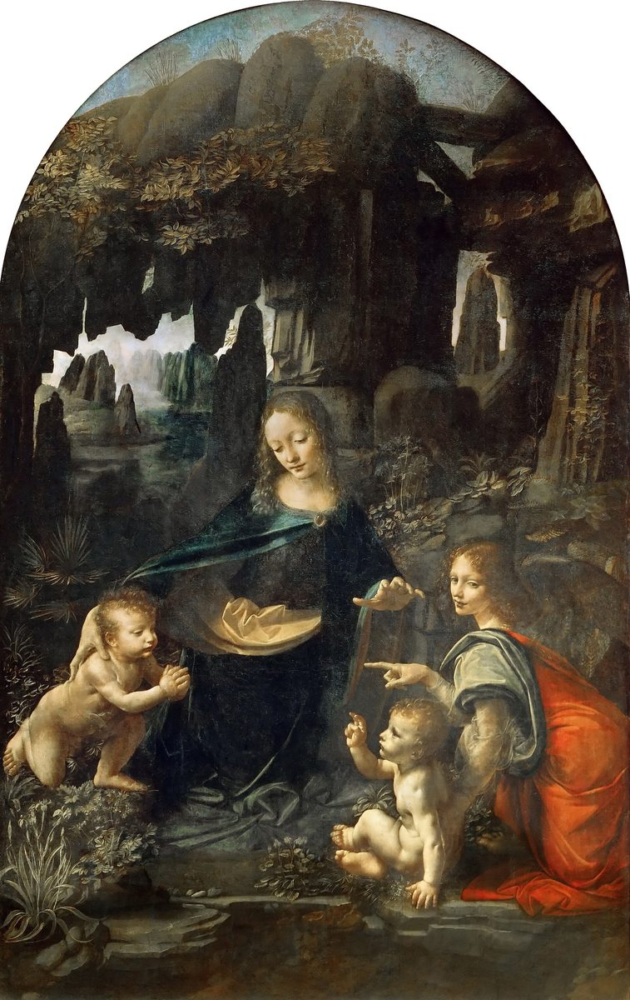

Hidden in the Frame · Louvre Museum, Paris
The Virgin of the Rocks
Leonardo da Vinci · c. 1483–86 · Oil on panel transferred to canvas, 199 × 122 cm · Room 710 (Denon wing, level 1)

The story
In 1483 a confraternity in Milan ordered an altarpiece for its chapel from Leonardo. Years of quarrelling about money followed – and in the end the painting existed twice. The first, earlier version hangs here in the Louvre, the second in the National Gallery in London. The scene comes from a legend: on the flight to Egypt, the infant Jesus meets the little John the Baptist in a rocky grotto.
Details to look for
- The angel points at John – and looks straight at you. He pulls you into the picture. In the London version this pointing finger is missing, one of the clearest differences between the two paintings.
- Mary's left hand hovers protectively over her son's head, like a dome. Together the four figures form a pyramid and look at one another – something new at the time.
- Look for the halos: there are none. Leonardo leaves them out completely. The holiness comes only from the light falling out of the dark cave onto the faces.
- At the bottom grow real plants, painted so precisely that many can be identified. Leonardo drew plants and stone like a naturalist – the rocks above the group are carefully observed too.
What it says
A holy picture without any gold: Leonardo builds the miracle out of light, glances and nature – and shows how the High Renaissance begins.
Open the full guide – zoom, audio guide, German & Japanese →